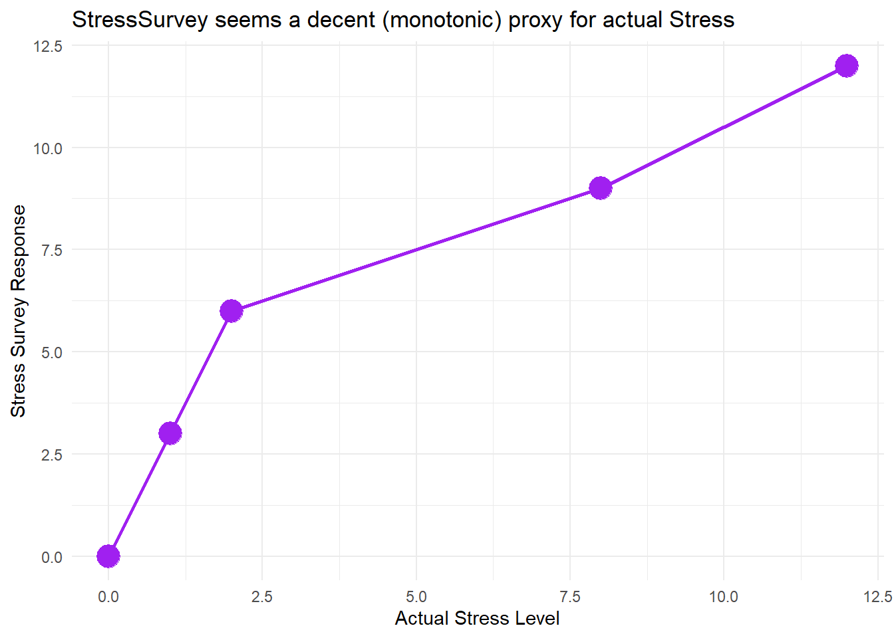
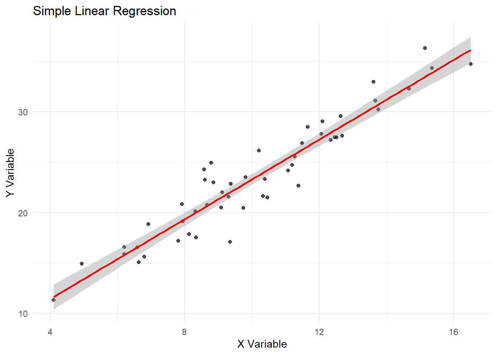

Garbage Can Regression & Interpretability Challenge
Don’t Trust Linear Models - The Perils of Non-Linearity
🗑️ Garbage Can Regression Challenge - Linear Model Interpretability
Challenge Overview
Your Mission: Create a comprehensive Quarto document that demonstrates the dangers of trusting linear models when relationships are non-linear, analyzes the interpretability issues that arise, and presents compelling visual evidence of why we need to be skeptical of regression results. Then render the document to HTML and deploy it via GitHub Pages using the starter repository workflow.
⚠️ AI Partnership Required
This challenge pushes boundaries intentionally. You’ll tackle problems that normally require weeks of study, but with Cursor AI as your partner (and your brain keeping it honest), you can accomplish more than you thought possible.
The new reality: The four stages of competence are Ignorance → Awareness → Learning → Mastery. AI lets us produce Mastery-level work while operating primarily in the Awareness stage. I focus on awareness training, you leverage AI for execution, and together we create outputs that used to require years of dedicated study.
The Garbage Can Problem 🎯
“We need to stop believing much of the empirical work we’ve been doing.” - Christopher H. Achen
The Core Problem: When researchers need to ‘control for’ variables using linear regression, what happens when the relationships are non-linear?
What does “control for” mean? Imagine you’re studying whether social media causes anxiety. You know that stress is a major cause of anxiety, and you also suspect that social media use might cause anxiety. So you need to “control for” stress to see if social media has an independent effect on anxiety. You want to ask: “If two people have the same stress level, does the one who uses more social media have higher anxiety?”
🎯 The Key Insight: Non-Linearity Breaks Even “Good” Regressions
The problem: Even when researchers carefully select control variables (not “garbage can” regression), non-linear relationships can make linear regression give completely wrong results.
Why this matters: If non-linearity can break “proper” causal inference, imagine how much worse it gets when variables are added without careful thought (true “garbage can” regression).
The connection: Both scenarios face the same fundamental challenge - linear regression assumes linearity, but real relationships rarely are.
Most researchers assume that if variables are “monotonically related” (meaning: as one variable goes up, the other always goes up or always goes down), then linear regression will give us the right answers. But here’s the catch: linearity is much stronger than monotonicity.
Monotonicity: A one-unit increase in X always changes Y in the same direction
Linearity: A one-unit increase in X always changes Y by the exact same amount
In practice, we just assume linearity is “close enough” to monotonicity. But what if it’s not? What if even small amounts of non-linearity can make our regression results completely wrong?
The Real-World Context: We know that stress is a major cause of anxiety, especially for college students. We also suspect that social media use might cause anxiety. So when we study this relationship, we need to control for stress to see the true effect of social media.
The Key Problem: But here’s where things get tricky. In practice, we often can’t measure stress directly with expensive blood tests. Instead, we use surveys and self-reports. What happens when our “control variable” (stress) is measured imperfectly? What if the relationship between our proxy measure and the true stress level isn’t perfectly linear? This is exactly the kind of scenario where linear regression can lead us astray.
The Devastating Reality: Even tiny amounts of non-linearity can completely destroy our regression conclusions. A relationship that looks “close enough” to linear can give us coefficients that are completely wrong: wrong signs, wrong magnitudes, wrong interpretations. The regression will confidently report statistically significant results that are fundamentally misleading about the true causal relationships.
Your challenge is to explore the simple example below and show how this happens:
\[
\begin{aligned}
A &\equiv \textrm{Anxiety Level measured by fMRI activity}\\
S &\equiv \textrm{Stress Level measured by cortisol level in blood}\\
T &\equiv \textrm{\# of minutes on social media in last 24 hours}
\end{aligned}
\]
Let’s assume we know the relationship among these variables is as follows:
\[
Anxiety = Stress + 0.1 \times Time
\]
🔍 Understanding the True Relationship: Implied Coefficients
Critical Point: Students often miss that this specific equation implies specific coefficient values in the generic multiple regression framework.
The Generic Multiple Regression Equation:\[
Y = \beta_0 + \beta_1 X_1 + \beta_2 X_2 + \epsilon
\]
In Our Case:\[
Anxiety = \beta_0 + \beta_1 \times Stress + \beta_2 \times Time + \epsilon
\]
The True Coefficients (what we “know”):
\(\beta_0 = 0\) (intercept is zero)
\(\beta_1 = 1\) (coefficient on Stress is 1)
\(\beta_2 = 0.1\) (coefficient on Time is 0.1)
Why This Matters: When we run regression analysis, we’re trying to estimate these \(\beta\) coefficients. If our regression gives us coefficients that are very different from these true values, we know our model is wrong—even if it has good statistical fit!
The Data Generation Process
Table 1: Observed data with known true relationships
Notice that \(Anxiety = Stress + 0.1 \times Time\) indeed holds perfectly. Also, notice the addition of a StressSurvey column. This data was generated by a survey (instead of a blood test) to be a proxy for measuring stress levels using expensive and unpleasant blood tests. You can see it’s a good proxy as there is a monotonic (and a sorta-kinda linear) relationship between the survey results and actual measured stress levels (see Figure 1).
📝 Methodological Note: The Contrived Nature of This Example
Important: This is a contrived example designed to illustrate the dangers of linear regression. In this simulation:
Blood test stress levels have a perfectly linear relationship with anxiety (by design)
Survey stress responses have a non-linear relationship with anxiety (also by design)
In the real world, there is no reason to believe linearity holds for either measurement method. Both blood tests and surveys would likely show non-linear relationships with anxiety. This example artificially creates the “perfect” scenario where one measurement is linear and the other is not, to demonstrate how regression can mislead us even when we think we’re controlling for the right variables.
observDF %>%ggplot(aes(x = Stress, y = StressSurvey)) +geom_line(linewidth =1, color ="purple")+geom_point(size =6, color ="purple") +labs(title ="StressSurvey seems a decent (monotonic) proxy for actual Stress",x ="Actual Stress Level",y ="Stress Survey Response" ) +theme_minimal()

Figure 1: StressSurvey as a proxy for actual Stress levels
Challenge Requirements 📋
Minimum Requirements for Any Points on Challenge
Create a Quarto Document: Use the starter repository (see Repository Setup section below) to begin with a working template. Write a concise quarto markdown file that includes a narrative of what you are doing along with the requested code, results, and visualizations of your regression analyses. The required narrative should answer the questions from the grading rubric section below.
Render to HTML: You must render the quarto markdown file to HTML.
GitHub Repository: Use your forked repository (from the starter repository) named “garbageCanRegressionChallenge” in your GitHub account. Upload your rendered HTML files to this repository.
GitHub Pages Setup: The repository should be made the source of your github pages:
Go to your repository settings (click the “Settings” tab in your GitHub repository)
Scroll down to the “Pages” section in the left sidebar
Under “Source”, select “Deploy from a branch”
Choose “main” branch and “/ (root)” folder
Click “Save”
Your site will be available at: https://[your-username].github.io/garbageCanRegressionChallenge/
Note: It may take a few minutes for the site to become available after enabling Pages
Step 2: Clone your fork locally using Cursor (or VS Code)
Step 3: You’re ready to start! The repository includes pre-loaded data and a working template.
💡 Why Use the Starter Repository?
Benefits:
Pre-loaded data: All required data (observDF with Stress, StressSurvey, Time, Anxiety) is included
Working template: Basic Quarto structure (index.qmd) is ready
No setup errors: Avoid common data loading issues
Focus on analysis: Spend time on regression analysis, not data preparation
Getting Started Tips
🎯 Navy SEALs Motto
“Slow is Smooth and Smooth is Fast”
Take your time to understand the regression mechanics, plan your approach carefully, and execute with precision. Rushing through this challenge will only lead to errors and confusion.
💾 Important: Save Your Work Frequently!
Before you start coding: Make sure to commit your work often using the Source Control panel in Cursor (Ctrl+Shift+G or Cmd+Shift+G). This prevents the AI from overwriting your progress and ensures you don’t lose your work.
Commit after each major step:
After completing each regression analysis
After finishing each challenge question
Before asking the AI for help with new code
How to commit:
Open Source Control panel (Ctrl+Shift+G)
Stage your changes (+ button)
Write a descriptive commit message
Click the checkmark to commit
Remember: Frequent commits are your safety net!
Grading Rubric 🎓
📊 What You’re Really Being Graded On
This is an investigative report, not a coding exercise. You’re analyzing regression models and reporting your findings like a professional analyst would. Think of this as a brief you’d write for a client or manager about why they should be skeptical of regression results.
What makes a great report:
Clear narrative: Tell the story of what you discovered about regression interpretability
Hidden Code: Tell a narrative and visual story, but hide your code (the code can be referenced in your github *.qmd source file if needed).
Insightful analysis: Focus on the most interesting differences between true relationships and estimated relationships
Professional presentation: Clean, readable, and engaging
Concise conclusions: No AI babble or unnecessary technical jargon
Human insights: Your interpretation of what the regression coefficients actually mean (or don’t mean)
Use convention of dependent variable on the vertical axis: When plotting, put the dependent variable (i.e., Anxiety) on the vertical axis. Independent variables (i.e., StressSurvey, Stress, and Time) should be on the horizontal axis.
What we’re looking for: A compelling 4-8 minute read that demonstrates both the power of linear models for interpretation and the critical pitfalls of over-relying on statistical significance in regression analysis.
Questions to Answer for 75% Grade on Challenge
Bivariate Regression Analysis with StressSurvey: Run a bivariate regression of Anxiety on StressSurvey. What are the estimated coefficients? How do they compare to the true relationship?
Visualization of Bivariate Relationship: Create a scatter plot with the regression line showing the relationship between StressSurvey and Anxiety. Comment on the fit and any potential issues.
Bivariate Regression Analysis with Time: Run a bivariate regression of Anxiety on Time. What are the estimated coefficients? How do they compare to the true relationship?
Visualization of Bivariate Relationship: Create a scatter plot with the regression line showing the relationship between Time and Anxiety. Comment on the fit and any potential issues.
Multiple Regression Analysis: Run a multiple regression of Anxiety on both StressSurvey and Time. What are the estimated coefficients? How do they compare to the true relationship?
🎯 Remember the True Coefficients!
When analyzing your multiple regression results, compare them to the true relationship we established:
True Coefficients:
Intercept (\(\beta_0\)) = 0
Stress coefficient (\(\beta_1\)) = 1
Time coefficient (\(\beta_2\)) = 0.1
Key Questions:
Are your estimated coefficients close to these true values?
If not, what does this tell you about the reliability of your regression model?
Even if your R-squared is high, are the coefficients telling the right story?
Questions to Answer for 85% Grade on Challenge
Multiple Regression Analysis: Run a multiple regression of Anxiety on both Stress and Time. What are the estimated coefficients? How do they compare to the true relationship?
Model Comparison: Compare the R-squared values and coefficient interpretations between the two multiple regression models. Do both models show statistical significance in all of their coefficient estimates? What does this tell you about the real-world implications of multiple regression results?
Questions to Answer for 95% Grade on Challenge
Reflect on Real-World Implications: For each of the two multiple regression models, assume their respective outputs/conclusions were published in academic journals and then subsequently picked up by the popular press. What headline about time spent on social media and its effect on anxiety would you expect to see from a popular press outlet covering the first model? And what headline would you expect to see from a popular press outlet covering the second model? Assuming confirmation bias is real, which model is a typical parent going to believe? Which model will Facebook, Instagram, and TikTok executives prefer?
Questions to Answer for 100% Grade on Challenge
Avoiding Misleading Statistical Significance: Reflect on this tip to avoid being misled by statistically significant results: splitting the sample into meaningful subsets (“statistical regimes”), and using graphical diagnostics for linearity rather than blind reliance on “canned” regressions. Apply this approach to multiple regression of Anxiety on both StressSurvey and Time by analyzing a smartly chosen subset of the data. What specific subset did you choose and why? Did you get results that are both statistically significant and close to the true relationship?
🎯 For 100% Grade: Focus on What’s Most Interesting
The key insight: Linear regression can give you statistically significant results that are completely wrong. The challenge is understanding when and why this happens.
What to investigate:
Coefficient Interpretation: What do the regression coefficients actually mean in this context?
The “Garbage Can” Problem: Can adding variables to a regression equation flip the sign of a coefficient while still making it appear significant?
Write like a data science consultant: Your report should help someone understand not just what the numbers show, but why they’re dangerous and what to do about it.
Technical Implementation Preferences 💡
Setting Up Your Analysis
For R Users:
Use tidyverse for data manipulation
Use ggplot2 for visualizations
Use lm() for regression analysis
Use broom for tidy regression output
For Python Users:
Use pandas for data manipulation
Use matplotlib and seaborn for visualizations
Use sklearn.linear_model for regression analysis
Use statsmodels for detailed regression output
Visualization Preferences
Professional Styling: Use consistent colors, clear labels, readable fonts, and informative titles
Before diving into the challenge, let’s review the key regression concepts you’ll need. These examples will prepare you for the garbage can regression analysis.
1. Simple Linear Regression: The Basics
Let’s start with a basic linear regression to understand the mechanics:
suppressPackageStartupMessages(library(tidyverse))suppressPackageStartupMessages(library(broom))# Create simple example dataset.seed(123)simple_data <-tibble(x =rnorm(50, mean =10, sd =3),y =2* x +3+rnorm(50, mean =0, sd =2))# Fit linear regressionmodel <-lm(y ~ x, data = simple_data)# Display resultstidy(model)
# A tibble: 2 × 5
term estimate std.error statistic p.value
<chr> <dbl> <dbl> <dbl> <dbl>
1 (Intercept) 3.53 0.985 3.58 7.89e- 4
2 x 1.98 0.0940 21.0 7.42e-26
# Create scatter plot with regression lineggplot(simple_data, aes(x = x, y = y)) +geom_point(alpha =0.7) +geom_smooth(method ="lm", se =TRUE, color ="red") +labs(title ="Simple Linear Regression",x ="X Variable",y ="Y Variable" ) +theme_minimal()
`geom_smooth()` using formula = 'y ~ x'

R simple linear regression example
import numpy as npimport pandas as pdimport matplotlib.pyplot as pltfrom sklearn.linear_model import LinearRegressionfrom sklearn.metrics import r2_score# Set seed for reproducibilitynp.random.seed(123)# Create simple example datan =50x = np.random.normal(10, 3, n)y =2* x +3+ np.random.normal(0, 2, n)# Fit linear regressionmodel = LinearRegression()model.fit(x.reshape(-1, 1), y)
LinearRegression()
In a Jupyter environment, please rerun this cell to show the HTML representation or trust the notebook. On GitHub, the HTML representation is unable to render, please try loading this page with nbviewer.org.
import numpy as npimport pandas as pdimport matplotlib.pyplot as pltimport seaborn as snsfrom sklearn.linear_model import LinearRegressionfrom sklearn.metrics import r2_score# Set seed for reproducibilitynp.random.seed(456)# Create multiple regression examplen =50x1 = np.random.normal(10, 3, n)x2 = np.random.normal(5, 2, n)y =2* x1 +0.5* x2 +3+ np.random.normal(0, 2, n)# Fit multiple regressionX = np.column_stack([x1, x2])model_multi = LinearRegression()model_multi.fit(X, y)
LinearRegression()
In a Jupyter environment, please rerun this cell to show the HTML representation or trust the notebook. On GitHub, the HTML representation is unable to render, please try loading this page with nbviewer.org.
A coefficient is statistically significant when its p-value is less than 0.05.
p < 0.05: Statistically significant
p ≥ 0.05: Not statistically significant
Understanding Scientific Notation in P-values
Sometimes you’ll see p-values written in scientific notation like 7.89e-4. Don’t panic! This is just a way to write very small numbers:
7.89e-4 means 7.89 × 10⁻⁴ = 0.000789
2.34e-6 means 2.34 × 10⁻⁶ = 0.00000234
1.23e-2 means 1.23 × 10⁻² = 0.0123
The key rule: If you see “e-” in a p-value, it’s always a very small number (less than 1). The number after “e-” tells you how many zeros come before the first non-zero digit.
Examples: - 7.89e-4 = 0.000789 (less than 0.05, so significant!) - 2.34e-6 = 0.00000234 (way less than 0.05, so very significant!) - 1.23e-2 = 0.0123 (less than 0.05, so significant!)
Remember: Statistical significance doesn’t mean the effect is large or important - it just means we’re confident the effect isn’t zero.
The Garbage Can Problem: A Deeper Look
The “garbage can regression” problem occurs when we include variables in our regression models that create misleading results, even when they appear statistically significant. This happens in several ways:
Random correlations: Even random variables can appear correlated by chance
Overfitting: More variables can improve fit without improving understanding
Multiple testing: The more variables we test, the more likely we are to find spurious relationships
Non-linear relationships: Variables with U-shaped, exponential, or other non-linear relationships with the outcome are forced into a linear framework, creating misleading coefficients
Why This Matters
In the real world, garbage can regressions can lead to:
False policy recommendations: Basing decisions on spurious correlations or false causal relationships
Wasted resources: Pursuing interventions that don’t actually work
Loss of credibility: When results can’t be replicated or don’t make sense
Ethical issues: Making decisions that affect people’s lives based on bad science
The Solution
The key is to always ask:
Does this make theoretical sense? Is there a plausible mechanism?
Is the relationship robust? Does it hold across different samples and specifications?
Are we overfitting? Do we have enough data relative to the number of variables?
Can we interpret the coefficients? Do the results tell a coherent story?
Is the relationship truly linear? Check for non-linear patterns that linear regression can’t capture
Are we forcing the wrong functional form? Consider if polynomial terms, interactions, or transformations are needed
Split the sample into meaningful subsets: Analyze different “statistical regimes” to see if relationships hold consistently across different parts of your data
Use graphical diagnostics: Don’t rely blindly on “canned” regressions—visualize the relationships to understand what’s really happening
Remember: Correlation is not causation, and regression coefficients can lie! 📊